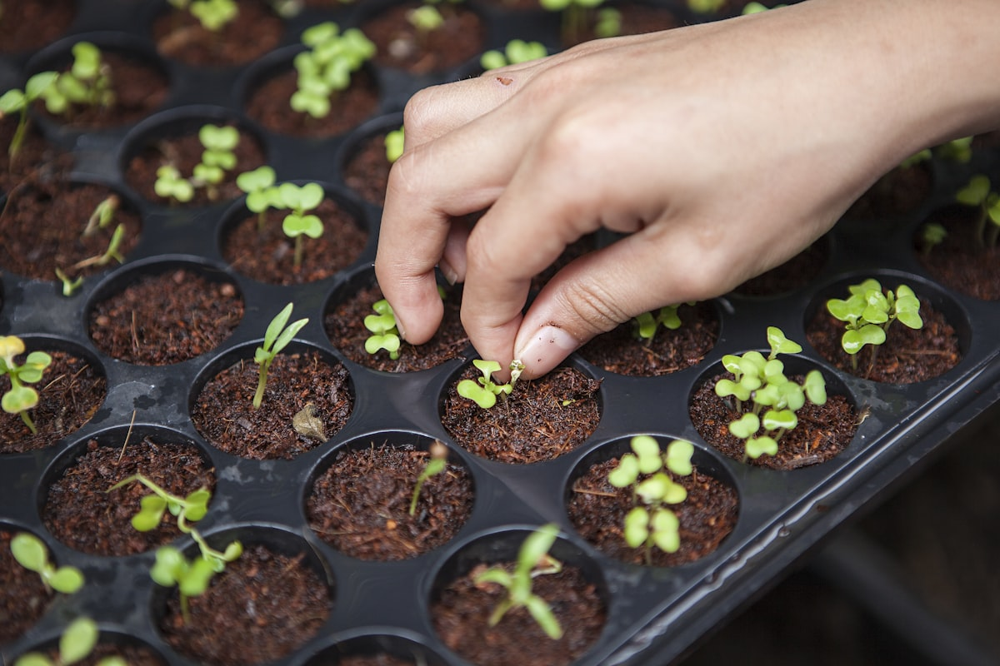
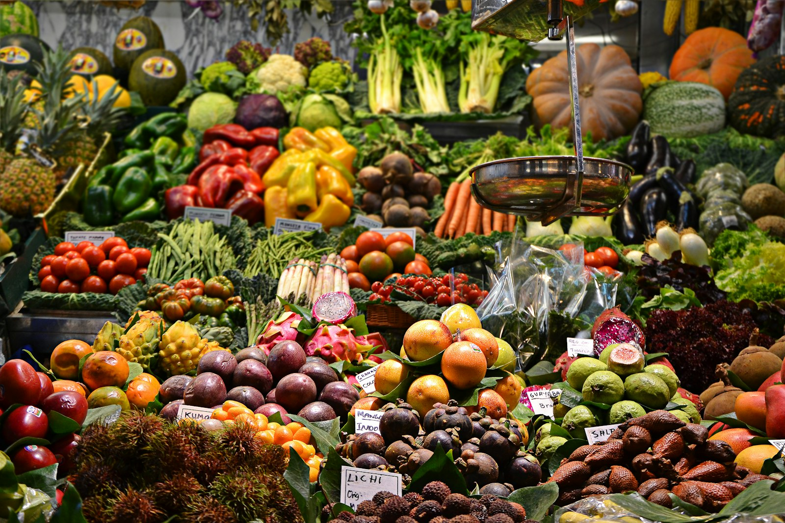

Drought-resistant peanut variety
Eight years of field trials show 22% higher yields under water stress.
Research
One reference for the whole theme, organized by composition scope — the same mental model WordPress uses. Pieces are reusable across any content type, not tied to the page they debuted on. Read top-to-bottom: each tier builds on the one above it.
Tiers: Foundations (tokens → theme.json) ·
Elements (atomic styled blocks) · Modules (composed units) ·
Patterns (full sections) · Pages (templates). Where a style is a non-default treatment of a
core block, the tag notes it (e.g. core/list · style variation).
Tier 1
Tokens — type scale, color, spacing, motion, focus. In the WordPress theme these live in theme.json and cascade to everything below.
Foundations
Foundations
Merriweather — the serif used for h1, body copy, and editorial display.
Oswald — h2–h6, labels, button text, eyebrows.
Foundations
0.25rem steps, coarsening at the top. Use for padding, margin, and gap.
0.25rem
0.5rem
0.75rem
1rem
1.25rem
1.5rem
2rem
3rem
4rem
5rem
8rem
Foundations
UGA Primary — Bulldog Red. Black and white are not separate tokens; use --contrast (near-black) and --base (white) from the neutrals below. --uga-red-deep and --uga-red-tint are custom shades (not in the UGA palette) for the button hover state and light red backgrounds.
UGA Accents (use sparingly — max 20% of design).
UGA Neutrals — the official university neutral palette.
Working neutrals (warm off-whites + soft grays — site palette).
Foundations
Tab through the controls to see the global focus ring — 3px outline, 3px offset, 4px radius. Components on dark backgrounds override the color to white.
Foundations · Accessibility
Landmarks are a table of contents for the whole page — a screen-reader user jumps between them via the rotor. Their entire value is being short and high-signal, so keep them few and uniquely named. The ARIA spec is explicit: don't create so many regions that the significant ones get lost. When everything is a landmark, nothing is.
Use a landmark only for top-level wayfinding targets: <header>/banner, <nav> (one per distinct navigation, each named), <main>, <aside>/complementary, <footer>/contentinfo, plus search/form for functional toolbars. A named region is a last resort for a genuinely standalone area a user would navigate to — rare.
Inside <main>, structure content with headings, not landmarks. A bare <section> is not a landmark — it only becomes a region when you give it an accessible name (aria-label/aria-labelledby). So do not put aria-labelledby on content sections; the <h2> inside already drives the heading rotor, which is the content outline. Keep <section id> for styling and jump-link targets — just don't name it into a landmark.
✗ Mints a needless region
<section class="news" aria-labelledby="news-h"> <h2 id="news-h">Latest News</h2> … </section>
✓ Heading-navigable, no region
<section class="news"> <h2>Latest News</h2> … </section>
The whole top of the page is a single banner: wrap the UGA global bar and the CAES top-nav together in one <header role="banner"> at the page level. Don't give each strip its own <header> — a page must have exactly one banner, and the UGA bar can't be left as a loose sibling or it becomes content in no landmark. The wrapper is a transparent grouping element; each strip keeps its own styling. The primary <nav aria-label="Primary"> stays a navigation landmark inside the banner.
✗ UGA bar orphaned · 2 banners
<div class="uga-global">…</div> <header role="banner"> …CAES nav… </header> <main>…</main>
✓ One banner wraps the masthead
<header role="banner"> <div class="uga-global">…</div> <div class="top-nav">…CAES nav…</div> </header> <main>…</main>
Reserve <article> for self-contained, independently meaningful items — a news story, an event, a research highlight, a person/program card (it should still make sense lifted out of context, like a feed item). The news and program cards use <article> correctly. Do not use <article> for supporting callouts or grouping boxes — the "how to pay" info boxes and advisor contact blocks are <div>, because they're not standalone content units (and unnamed articles just add rotor noise).
Foundations · Layout
Full-width sections alternate between paper (white) and a warm off-white tint to separate them without rules. Insets flip to the opposite tone so they keep contrast on either band. WP: applied as section/Group block background colors.
Tier 2
The smallest styled pieces — they compose nothing. Most map to a core block; some are non-default block style variations (noted in the tag). Reusable in any content, not specific to where they first appeared.
Element
Default body type — Merriweather at 17px / 1.6.
For more than a century, CAES has been turning research into harvests, classrooms into careers, and Georgia's land into a laboratory for what's next. Bold reads like this, while italic leans this way. Inline links inherit color and underline on hover, and inline code picks up the monospace treatment.
Whitespace-preserving blocks. Code wraps in <pre><code>; Verse is italic serif for line-break-sensitive text.
:root {
--uga-red: #BA0C2F;
--wide-width: 1240px;
}In every seed, a season folded — the work is the harvest; the harvest is the work.
Element
Responsive by default (max-width:100%, block). WP: core/image — figure + figcaption.

Crop any source to a ratio token with object-fit: cover — keeps grids tidy regardless of the original dimensions. Tokens: 3:2, 1:1, 4:5.


A full-column image placed below the text it accompanies, with a capped band height (clamp(260px, 30vw, 400px)) so it reads as an accent rather than dominating — never full-bleed. Used between prose sections.

Element
Inline links inherit color and underline on hover. .link-arrow is the red, condensed-weight call-to-action used in card footers and section rails. Exception — links inside a card: when the whole card (or its title) is the link, the card's own hover cues (shadow, image zoom, title color shift, arrow) carry the affordance, so the card title does not add a hover underline.
Read more about our research initiatives across Georgia.
Read the latest issue →Element
Pill shape, condensed weight, 44px min hit target. WP: a single core/button with registered style variations (.btn-filled, .btn-white, .btn-outline-white); the outline is the default.
Element
1.5px rule border, paired button, focus ring. WP: typically supplied by a forms plugin block; the field styling is token-driven.
Element
Ordered or unordered; supports nesting.
Native disclosure / multi-open accordion. Click a summary to expand. Useful for FAQs. (See also the single-select Accordion module.)
Twenty-seven undergraduate majors across the agricultural and environmental sciences.
Yes — CAES distributes more than $700,000 in scholarship awards every year.
Element
Red circular check marks; flows in two columns, collapses to one on small screens. Good for “what you'll do / what's included” lists anywhere.
Space-efficient list for many short items: red dot markers, hairline rule per row, auto-filling into as many columns as the width allows.
Sequential guidance as cards, each led by a serif numeral in a tinted circle. Three across, stacking on mobile. WP: a Columns pattern, or a small custom block.
Volunteer at a local community garden, park, or botanical garden.
Take part in the Young Scholars Program, 4-H, or FFA.
Work at a farm, nursery, or garden center.
Element
Borders, condensed-caps headers. Optional is-style-stripes alternates row backgrounds.
| Department | Awards | Total |
|---|---|---|
| Plant & Soil Sciences | 34 | $24.1M |
| Animal & Dairy Science | 28 | $18.7M |
| Food Science & Technology | 19 | $12.3M |
Element
Small condensed-caps label on a light-red field — categorizes cards (audience, phase, topic, status). The soft variant (neutral chip, sentence case) is quieter for dense metadata lists where many tags sit together — e.g. areas of expertise on the Our Experts cards.
Changed pattern (accessibility). The short, descriptive label is now the actual heading — <h2 class="section-kicker"> — with the editorial flourish demoted to a <p class="section-display"> beneath it, and any intro copy as <p class="section-lede">. Previously a <span class="eyebrow"> label sat before a display <h2>, which stranded the label outside the heading — lost when navigating by headings, and announced as orphan text. Now the heading outline names each section ("About this major," "Coursework," "Careers"). The .eyebrow style survives only for page heroes — there the <h1> is already the descriptive title, so the category label goes after it ("Horticulture" → "Undergraduate Major"), never before. WP: a Heading block + two Paragraphs, or a custom block.
Horticulture is everywhere.
Sustainably growing fruits, vegetables, and medicinal herbs to feed and heal a hungry population — from greenhouses to outer space.
Key/value facts as a horizontal definition list bracketed by hairline rules — label in condensed caps, value in serif. Reusable as a spec / at-a-glance strip on any detail page.
Element
Inline blockquote with optional citation. Left red rule, italic serif.
CAES taught me that the best research starts with a question from a farmer — and ends back in the dirt where it began.
Dr. Imani Wright, Class of '04
Larger, centered, framed by top/bottom rules. A layout device — use sparingly.
Georgia's land is our laboratory.
— CAES, since 1859
A left-rule, serif-italic pullquote for inline emphasis within a section — a lighter alternative to the centered pullquote above.
A starting point for an exciting career and life-long pursuit — one that stays with you no matter where in the world you go.
Element
Big serif figure over a thin progress bar (filled to the value) with a condensed label — for survey results and at-a-glance metrics on any page.
Element
Numbered notes attached to inline references; renders at the foot of the post.
Georgia's peanut industry contributes more than $700M to the state economy each year.1
Tier 3
Elements composed into one reusable unit. The tiebreaker: a module composes two or more named pieces. Some are core container blocks (Media & Text); others become custom blocks (card, carousel, modal). A module's variations live together — see Cards.
Module
Paired image + text columns. Defaults to media-on-the-left; add has-media-on-the-right to flip. Stacks below 700px. WP: core container block — composite, so it lives at the Module tier.
Tested over eight years across the Athens, Griffin, and Tifton stations.
Read the field report →Module
One base card, several fills — image+blurb, image-only, and text-only — shown together to make the shared anatomy obvious. Accessible link pattern: the <a class="card-link"> wraps only the title; a CSS ::after stretches it across the card. Hover deepens the shadow and zooms the image ~6% (no lift) — except the image-less card, which has nothing to zoom and so takes the link-card hover (red top-rule, title red, arrow). Card-link titles get no hover underline — the card's own hover cues carry the affordance. WP: a custom block, or a Columns + Group pattern with a style variation per fill.
Eight years of field trials show 22% higher yields under water stress.
Research
A text-only card — with no image to zoom, it takes the link-card hover instead (red top-rule, title red, arrow).
Profile
When the whole card points to one destination and has no hero image, use this instead of the media card's zoom. The hover signature is different on purpose: a red top-rule wipes in left-to-right, the title turns red, the arrow advances, and the shadow deepens (no underline — the card cues do the work). An optional 52px circular thumbnail adds a visual anchor without making it an image card (it gets a gentle zoom on hover too). Used by the Degrees & Programs directory. WP: custom block or a Group with the link applied to the title (card-link stretched ::after) — one link only, so no nested interactive elements.


For people — faculty, advisors, contacts. A 56px circular avatar sits beside the name and role; the same circular-image convention as the directory thumbnail, one size up. Used by the advisor contacts on the program-detail page.
Academic Advisor
Module
One row open at a time (used in Student Life). WP: the native core/details covers multi-open FAQs; this single-select behavior is a small custom block.
Module
Horizontally scroll-snapping 4:5 photo cards with a serif label; 44px round arrows scroll one card at a time. WP: custom block.
Module
Backdrop + dialog scaffolding: centered on desktop, bottom sheet under 640px, with click-outside / Esc / close-button dismiss. The selection variant wires it up as a filter picker with a count-tracking apply button.
Module
Pill pickers that open a modal — .is-primary marks the primary axis, .is-active shows a selection (with count badge). Applied values surface as black chips; click one to remove it (hover turns it red).
Tier 4
Full-width sections built from modules — the building blocks of a page. Each has its own standalone preview. WP: registered block patterns / template parts.
Extracted from the degree page
Section-level blocks pulled out of the program-detail page — none are degree-specific, so each fits department, faculty, and research-area landing pages too. (The sticky section nav is catalogued as a Module; the stat bars, checklist, steps, facts row, tags, and accent pullquote are Elements.)
The faded-in header photo is one shared, background-agnostic treatment (.header-photo, defined in _tokens.css) — not per-page code. Add has-header-photo to any header and a masked image rides its right edge, dissolving to transparent on the left so it reveals whatever band sits behind it: the dark detail hero here, and the light interior header on the Academics landing page (which adds .ip-header--media). Each host tunes width and fade distance per background with the --header-photo-* custom properties — a paler band fades over a longer distance to hide the image edge.
Tier 5
Whole compositions — patterns assembled into a template. WP: templates.
The modal body accepts any content — paragraphs, forms, embeds, lists. The backdrop, escape handler, and click-outside dismiss come with the shell.